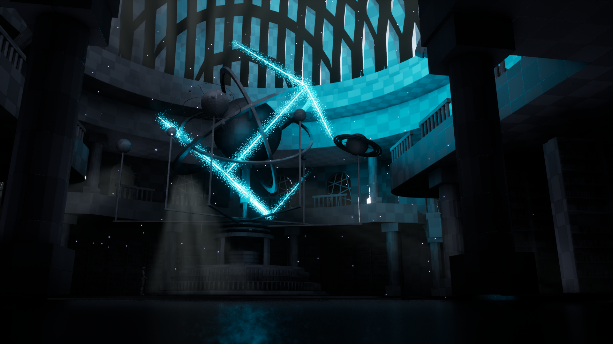

Forging a New Kind of Power in Karlovy Vary
Welcome to the very first development log for Submontium. Building a first-person RPG as a solo developer is a massive undertaking, but the vision for this world has never been clearer. We are stepping into the early 19th century, right into the heart of Karlovy Vary. But not the spa town you might know from the history books.

Science, Not Sorcery
A core pillar of Submontium is its approach to abilities and interactions. You won't find traditional magic here. There are no fireballs to cast or lightning bolts to summon from the sky with a flick of a wand. Instead, the focus is entirely grounded in science, chemistry, and the utilization of raw elements.
The power comes from understanding and manipulating the environment and the unique properties of the local springs. It's about harnessing electricity through early, experimental apparatuses and utilizing steam power to solve problems and survive.
The Road Ahead
The foundation is being laid in Unreal Engine, and the next few months are going to be critical for the visual and technical fidelity of the game. In about six weeks, I will be diving into an intensive Intro to Unreal Engine course over at Rebelway to push the cinematic quality and environmental storytelling a little bit further.
Additionally, because the manipulation of elements and steam is so crucial to the gameplay, I have set a strict milestone to learn and integrate Houdini into the workflow over the next three months. This will allow for the creation of complex, realistic simulations for the steam, water, and chemical reactions that drive the core mechanics of Submontium.
Stay tuned. The springs are just starting to heat up.
← Back to Devlog Index